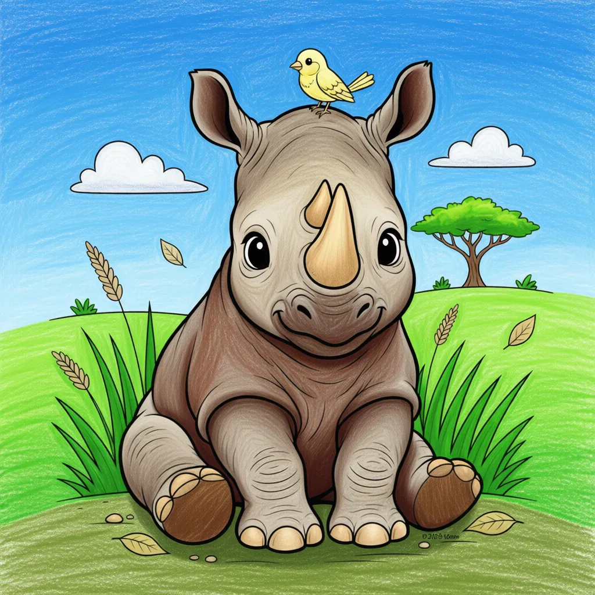

Black Rhinoceros
Diceros bicornis

Key Characteristics
- Rhinos are one of the oldest groups of mammals on Earth, often called 'living fossils'.
- Despite their name, Black Rhinos are usually gray or brown, their color comes from the mud they roll in!
- Their horn is made of keratin, the same material as human hair and fingernails.
Peculiar Facts (Fun Facts!)
- Rhinos love rolling in mud. This helps them cool down and protects their skin from bugs and the hot sun.
- They have poor eyesight but an excellent sense of smell and hearing to help them navigate the bush.
- Sadly, Black Rhinos are critically endangered due to poaching (illegal hunting) for their horns.